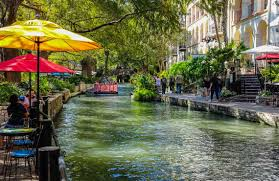
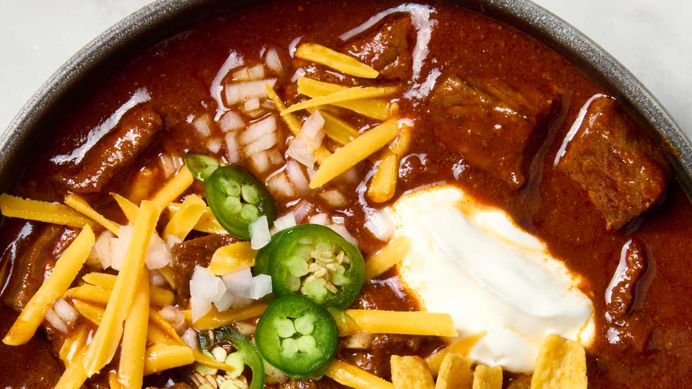

Top Tourist Spots
- The Alamo
- Big Bend National Park
- Space Center Houston
- San Antonio River Walk 


Famous Foods
| Food | Description |
|---|---|
Barbecue Brisket

|
Smoky, tender beef brisket slow-cooked over wood fire. |
Tex-Mex Tacos

|
Delicious tacos with a fusion of Mexican and Texas flavors. |
| Chili  | Spicy and hearty chili, a Texas classic dish. |
Culture & Festivals
Texas has a rich and diverse culture influenced by Native American, Mexican, and Southern traditions. The state celebrates its heritage through festivals such as South by Southwest (SXSW) in Austin, the Houston Livestock Show and Rodeo, Fiesta San Antonio, and many country music events. Texas culture is also reflected in its cowboy history, rodeos, blues and country music, art galleries, and local cuisine. Whether exploring historic towns, attending live music events, or enjoying outdoor activities, Texas offers a vibrant cultural experience for everyone.